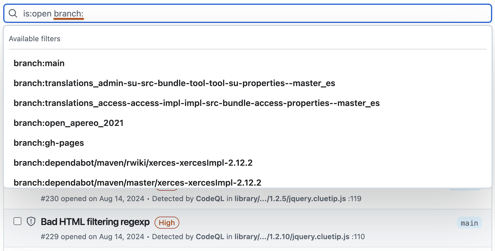
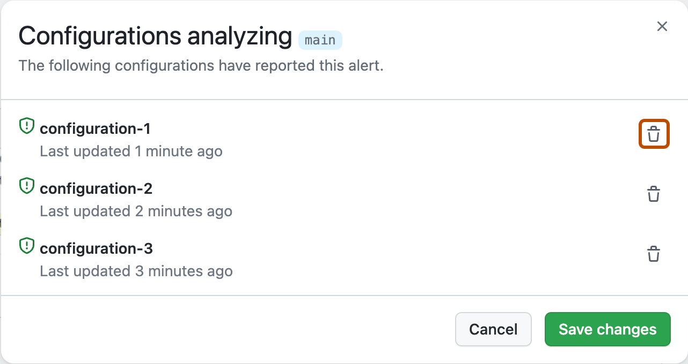

You can assign a code scanning alert to Copilot to have it fix the alert for you. Assigning the alert starts an agent session: Copilot cloud agent explores your codebase, generates a fix, validates it, and opens a pull request.
Each agentic autofix session is billed as a Copilot cloud agent session and consumes AI credits. See About GitHub Copilot cloud agent.
To assign an individual alert to Copilot:
On GitHub, navigate to the main page of the repository.
Under the repository name, click the Security and quality tab. If you cannot see the " Security and quality" tab, select the dropdown menu, and then click Security and quality.
In the left sidebar, click Code scanning.
Click the name of an alert.
At the top of the page, click Assign to Copilot.
You can also assign alerts to Copilot in bulk:
From the code scanning alerts backlog or from a security campaign, select between 1 and 25 alerts and assign them to Copilot, which works to resolve the selected alerts in a single pull request. See Fixing alerts in a security campaign.
Typically within a few minutes, Copilot opens a draft pull request authored by Copilot, with a summary of the fix and the validation steps taken. Review the agent session log for details, and comment on the pull request, mentioning Copilot, to ask it to iterate.
Copilot cloud agent validates fixes on a best-effort basis. If it can't validate a fix, or thinks the alert might be a false positive, it says so in the pull request.
Generating a suggested fix
If Copilot cloud agent isn't available in your repository, you can still use GitHub Copilot Autofix to generate a one-step suggested fix for the alert.
Note
You do not need a subscription to GitHub Copilot to use GitHub Copilot Autofix. Copilot Autofix is available to all public repositories on GitHub.com, as well as internal or private repositories owned by organizations and enterprises that have a license for GitHub Code Security.
On GitHub, navigate to the main page of the repository.
Under the repository name, click the Security and quality tab. If you cannot see the " Security and quality" tab, select the dropdown menu, and then click Security and quality.
In the left sidebar, click Code scanning.
Click the name of an alert.
If Copilot Autofix can suggest a fix, at the top of the page, click Generate fix.
Once the suggested fix has been generated, at the bottom of the page, you can click Create PR with fix to automatically generate a pull request with the suggested fix.
A new branch is created from the default branch, the generated fix is committed and a draft pull request is created. You can test and edit the suggested fix as you would with any other fix.
You can also use the Autofix API for historical alerts endpoints to generate, get, and commit suggested fixes.
Copilot Autofix for code scanning alerts won't be able to generate a fix for every alert in every situation. The feature operates on a best-effort basis and is not guaranteed to succeed 100% of the time. For information about the limitations of automatically generated fixes, see Limitations of suggestions.
Fixing an alert manually
Anyone with write permission for a repository can fix an alert by committing a correction to the code. If the repository has code scanning scheduled to run on pull requests, it's best to raise a pull request with your correction. This will trigger code scanning analysis of the changes and test that your fix doesn't introduce any new problems. See Triaging code scanning alerts in pull requests.
You can use the free text search or the filters to display a subset of alerts and then in turn mark all matching alerts as closed.
Alerts may be fixed in one branch but not in another. You can use the "branch" filter, on the summary of alerts, to check whether an alert is fixed in a particular branch.

Please note that if you have filtered for alerts on a non-default branch, but the same alerts exist on the default branch, the alert page for any given alert will still only reflect the alert's status on the default branch, even if that status conflicts with the status on a non-default branch. For example, an alert that appears in the "Open" list in the summary of alerts for branch-x could show a status of "Fixed" on the alert page, if the alert is already fixed on the default branch. You can view the status of the alert for the branch you filtered on in the Affected branches section on the right side of the alert page.
Note
If you run code scanning using multiple configurations, the same alert will sometimes be generated by more than one configuration. Unless you run all configurations regularly, you may see alerts that are fixed in one configuration but not in another. These stale configurations and alerts can be removed from a branch. See Removing stale configurations and alerts from a branch.
Dismissing alerts
There are two ways of closing an alert. You can fix the problem in the code, or you can dismiss the alert.
Dismissing an alert is a way of closing an alert that you don't think needs to be fixed. For example, an error in code that's used only for testing, or when the effort of fixing the error is greater than the potential benefit of improving the code. You can dismiss alerts from code scanning annotations in code, or from the summary list within the Security and quality tab.
When you dismiss an alert:
It's dismissed in all branches.
The alert is removed from the number of current alerts for your project.
The alert is moved to the "Closed" list in the summary of alerts, from where you can reopen it, if required.
The reason why you closed the alert is recorded.
Optionally, you can comment on a dismissal to record the context of an alert dismissal.
Next time code scanning runs, the same code won't generate an alert.
To dismiss alerts:
On GitHub, navigate to the main page of the repository.
Under the repository name, click the Security and quality tab. If you cannot see the " Security and quality" tab, select the dropdown menu, and then click Security and quality.
In the left sidebar, click Code scanning.
If you want to dismiss an alert, it's important to explore the alert first, so that you can choose the correct dismissal reason. Click the alert you'd like to explore.
Review the alert, then click Dismiss alert and choose, or type, a reason for closing the alert.
It's important to choose the appropriate reason from the drop-down menu as this may affect whether a query continues to be included in future analysis. Optionally, you can comment on a dismissal to record the context of an alert dismissal. The dismissal comment is added to the alert timeline and can be used as justification during auditing and reporting. You can retrieve or set a comment by using the code scanning REST API. The comment is contained in dismissed_comment for the alerts/{alert_number} endpoint. For more information, see REST API endpoints for code scanning.
If you dismiss a CodeQL alert as a false positive result, for example because the code uses a sanitization library that isn't supported, consider contributing to the CodeQL repository and improving the analysis. For more information about CodeQL, see Contributing to CodeQL.
Dismissing multiple alerts at once
If a project has multiple alerts that you want to dismiss for the same reason, you can bulk dismiss them from the summary of alerts. Typically, you'll want to filter the list and then dismiss all of the matching alerts. For example, you might want to dismiss all of the current alerts in the project that have been tagged for a particular Common Weakness Enumeration (CWE) vulnerability.
Re-opening dismissed alerts
If you dismiss an alert but later realize that you need to fix the alert, you can re-open it and fix the problem with the code. Display the list of closed alerts, find the alert, display it, and reopen it. You can then fix the alert in the same way as any other alert.
Removing stale configurations and alerts from a branch
You may have multiple code scanning configurations on a single repository. When run, multiple configurations can generate the same alert. Additionally, if the configurations are run on different schedules, the alert statuses may become out-of-date for infrequent or stale configurations. For more information on alerts from multiple configurations, see Code scanning alerts.
On GitHub, navigate to the main page of the repository.
Under the repository name, click the Security and quality tab. If you cannot see the " Security and quality" tab, select the dropdown menu, and then click Security and quality.
In the left sidebar, click Code scanning.
Under "Code scanning", click a code scanning alert.
In the "Affected branches" section of the sidebar, click the desired branch.
In the "Configurations analyzing" dialog, review details of the configurations that reported this alert on the selected branch. To delete an unwanted configuration for the desired branch, click .
If you delete a configuration by mistake, click Cancel to avoid applying your changes.

Once you have removed any unwanted configurations and confirmed the expected configurations are displayed, click Save changes.
If you save your changes after accidentally deleting a configuration, re-run the configuration to update the alert. For more information on re-running configurations that use GitHub Actions, see Re-running workflows and jobs.
Note
If you remove all code scanning configurations for the default branch of your repository, the default branch will remain in the "Affected branches" sidebar, but it will not be analyzed by any configurations.
If you remove all code scanning configurations for any branch other than the default branch of your repository, that branch will be removed from the "Affected branches" sidebar.